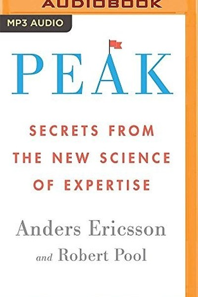
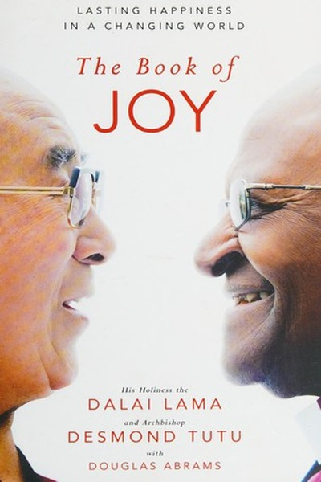
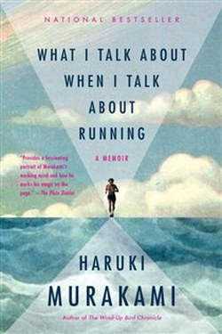
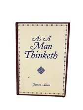
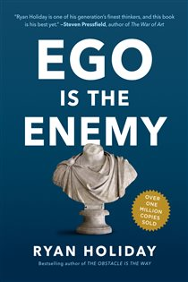
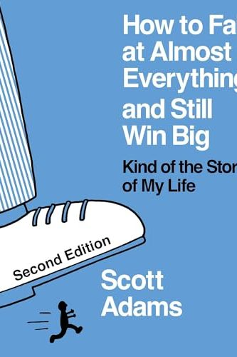
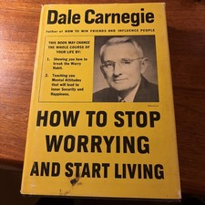

Library › Books like Can't Hurt Me
10 Books Like Can't Hurt Me That Hit the Same Nerve
You finished Can't Hurt Me by David Goggins and want the same energy: You're only using 40% of your capability. The other 60% sits behind a wall of suffering your mind built to pro… Here are 10 more that scratch the same itch, each with a free chapter-by-chapter breakdown, key lessons and action steps on this shelf.

Peak Anders Ericsson, the researcher behind the 10,000-hour rule, explains what actually creates expertise: deliberate practice, mental representations and coaches. READ THE FREE BREAKDOWN →
The Book of Joy Joy is not the absence of suffering but a skill - built through gratitude, forgiveness, humility and compassion. READ THE FREE BREAKDOWN →
What I Talk About When I Talk About Running The novelist's running diary: a life built on monotony, repetition and the quiet refusal to quit. READ THE FREE BREAKDOWN →
As a Man Thinketh You are literally what you think: character, circumstance, health, and destiny are woven - thread by thread - on the loom of thought. READ THE FREE BREAKDOWN →
Ego Is the Enemy At every career stage - aspiring, succeeding, failing - ego is the invisible saboteur. Humility, purpose, and the work are the antidotes. READ THE FREE BREAKDOWN →
How to Fail at Almost Everything and Still Win Big The Dilbert creator failed at everything - then won by using systems instead of goals, stacking mediocre skills into rarity, and managing energy like capital. READ THE FREE BREAKDOWN →
How to Stop Worrying and Start Living Live in day-tight compartments, accept the worst, then improve on it - worry is a habit, and habits have off-switches. READ THE FREE BREAKDOWN → If Truth Be Told
Om Swami tells the truth about trading success for the Himalayas - corporate emptiness, monastic hardship and the slow practice that built real peace.
READ THE FREE BREAKDOWN →
If Truth Be Told
Om Swami tells the truth about trading success for the Himalayas - corporate emptiness, monastic hardship and the slow practice that built real peace.
READ THE FREE BREAKDOWN →
 India 2020
Nation-building is not a government project; it is a mission every citizen adopts through competence, integrity and work.
READ THE FREE BREAKDOWN →
India 2020
Nation-building is not a government project; it is a mission every citizen adopts through competence, integrity and work.
READ THE FREE BREAKDOWN →
Every summary is free: lessons, examples, action steps, audio in your language.